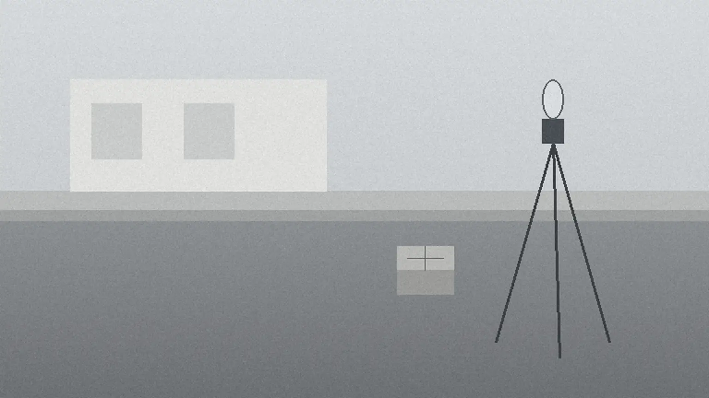
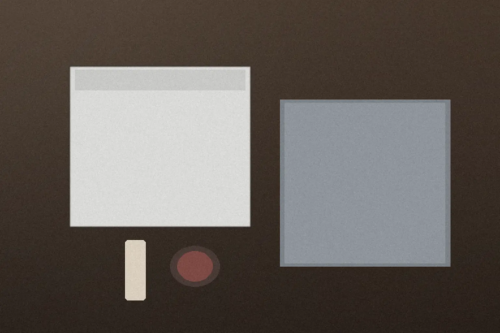
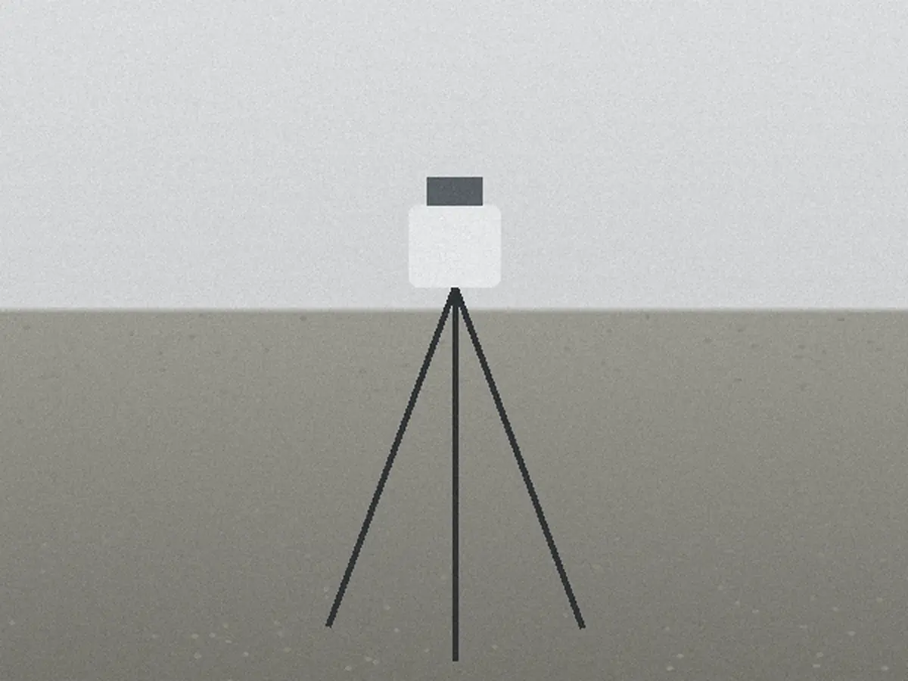
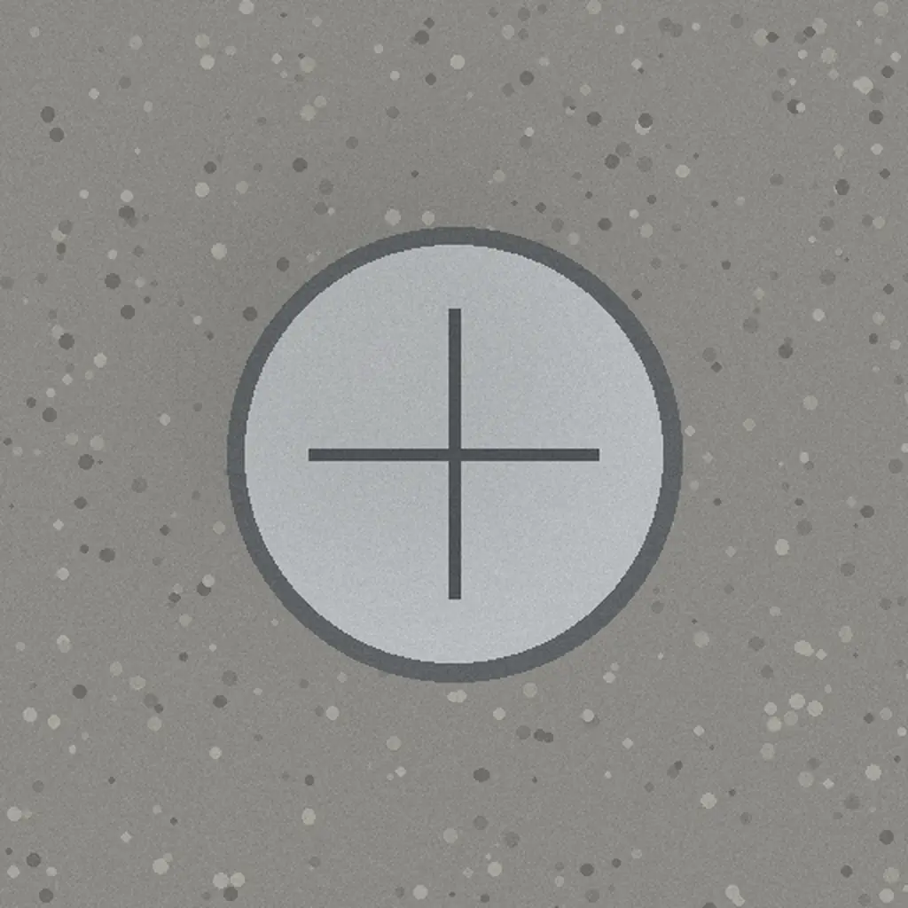
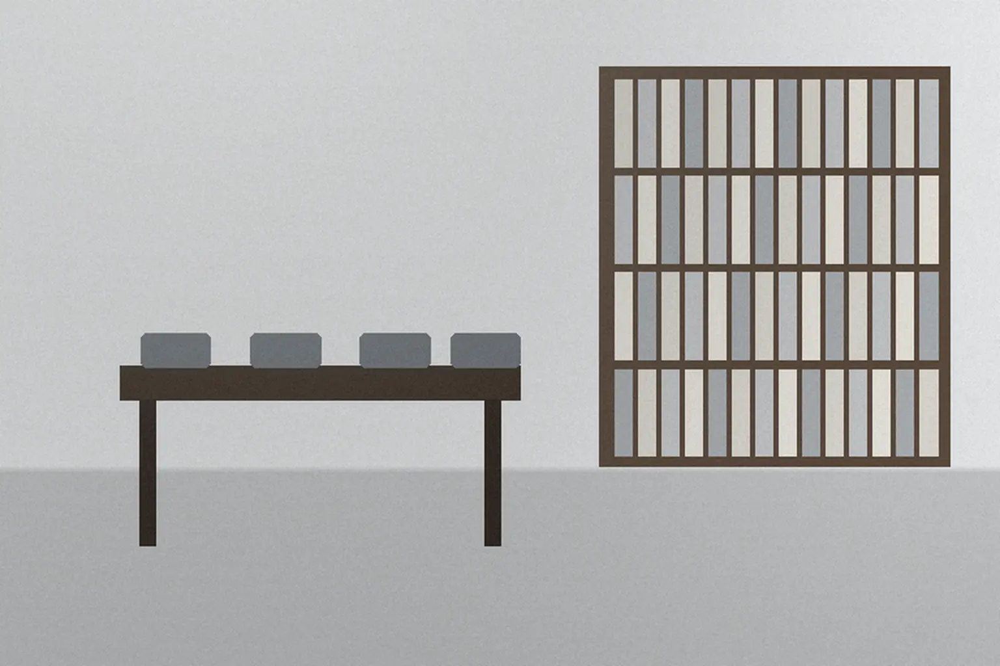

とおみ事務所 手続きの手引き第1章
第1章
まず、この書類からご用意ください
こんな方へ相談の日に、何を持っていけばよいかを知りたい方

全部そろっていなくても、手元にあるものだけで相談できます。戸籍や登記の記録は、こちらで取り寄せることもできます（取り寄せの実費のみ）。
| 持ってくる書類 | 相続の登記 | 境界の確認と測量 | 建物の登記 |
|---|---|---|---|
| 固定資産税の納税通知書毎年、市町村から届く書類。土地・建物の所在地が分かります | 持参 | 持参 | 持参 |
| 亡くなった方と相続人の関係のメモ家系図の走り書きで十分です | 持参 | — | — |
| 以前の測量図・隣地と話した記録境界について話した日付や内容のメモでも構いません | — | あれば | — |
| 建物の図面や工事の書類工事の内容が分かるもの。要る書類は建物の種類で変わります【要確認】 | — | — | 持参 |
とおみ事務所 手続きの手引き第2章
第2章
手続きの正式な名前と、担当・期間
こんな方へ役所や書類で見かける名前が、どの手続きか確かめたい方

-
2-1
相続の登記
正式な名前所有権移転登記（相続）
亡くなった方の名義を、相続する人の名義に書き換える手続き
-
2-2
境界の確認と測量
書類での呼び名確定測量（境界確定測量）
隣地の方の立ち会いのもとで境目を確かめ、図面にして印を入れる手続き
-
2-3
建物の登記
正式な名前建物表題登記・建物表題部変更登記・建物滅失登記
新築・増築・取り壊しを、登記の記録（国が管理する土地と建物の台帳）に反映する手続き
用語の言い換え筆（ひつ）＝登記で土地を数える単位。分筆（ぶんぴつ）＝一つの土地を分けて登記すること。期間は書類がそろってからの目安です。
とおみ事務所 手続きの手引き第3章
第3章
相談から完了まで、この順番で進みます
こんな方へ初めてで、どこまでが自分の役目か知りたい方
| 段 | ご依頼者がすること | 事務所がすること |
|---|---|---|
| 3-1相談 | 電話かフォームで申し込み、来所かオンラインを選ぶ。第1章の書類を持参する | 話を伺い、必要な手続きと担当の資格者を整理する |
| 3-2書類の確認と見積もり | 見積もりの書面を見て、依頼するかどうかを決める | 登記の記録や図面を取り寄せ、手続きと費用を書面でお出しする |
| 3-3手続き | 求められた書類に署名・押印する | 申請・測量を進め、途中の経過を書面で報告する |
| 3-4完了 | 書類と図面を受け取り、大切に保管する | 登記完了証など、登記が終わったことを示す書類と、図面をお渡しする |
登記や測量の結果（境界がどこに決まるか、など）は、あらかじめお約束できません。見通しは、書類を確かめた段階で書面にします。
とおみ事務所 手続きの手引き第4章
第4章
対応範囲と、お受けしないこと
こんな方へ自分の手続きを頼めるか、先に確かめたい方

- お受けしないこと
- 境界をめぐる争いの代理人弁護士をご紹介します税金の申告税理士をご紹介します
- 境界標の確認
- 四隅の印が残っているかを現地で確かめます。なくなっていれば、隣地の方の確認を得たうえで入れ直します。確認が得られないときは、ご相談ください。
- 隣地の立ち会い
- 隣地の方へのお願いの書面と、日程の調整は事務所が行います。
- 対応する地域
- 架空県内と、隣接する市まで。遠い場合は、現地の事務所をご紹介します。
とおみ事務所 手続きの手引き第5章
第5章
事務所と資格者
こんな方へ誰が担当し、どんな部屋で話すのかを先に知りたい方

| 名称 | 司法書士・土地家屋調査士 とおみ事務所 |
|---|---|
| 資格者 | 代表 遠見（とおみ） 司法書士・土地家屋調査士 |
| 相談の部屋 | 仕切りのある個室 |
| 相談の方法 | 来所かオンライン（申し込みは電話かフォーム） |
資格者の登録番号と所属する会は【要確認】。所在地と受付時間は頁の下にあります。